¡HOLA! Bienvenido a mi mundo :3 Soy Bahar Rafeenekoo y estudio 2º de Bachillerato en IES Miguel de Cervantes de Sevilla.
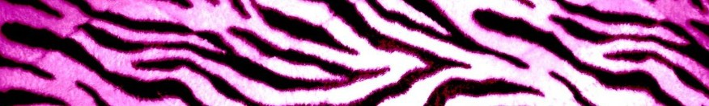| 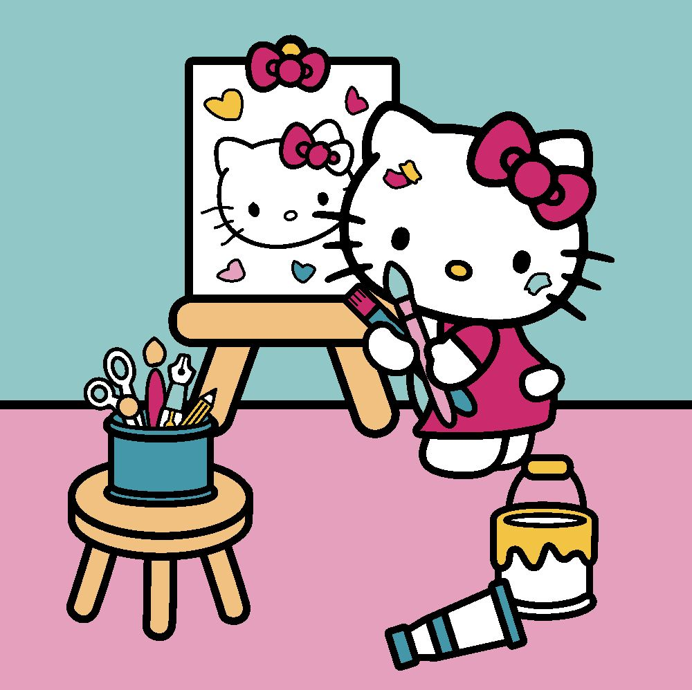 | |
| 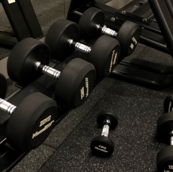 | 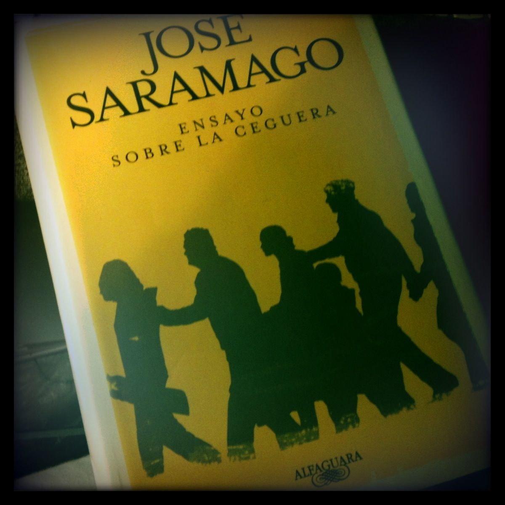 |
| 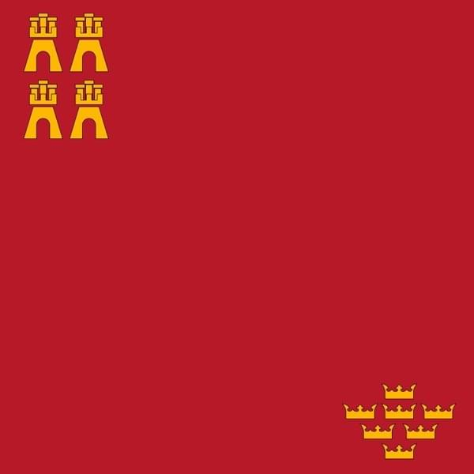 | 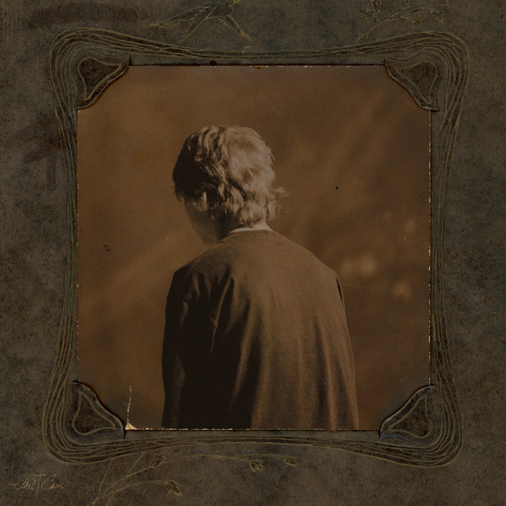 | 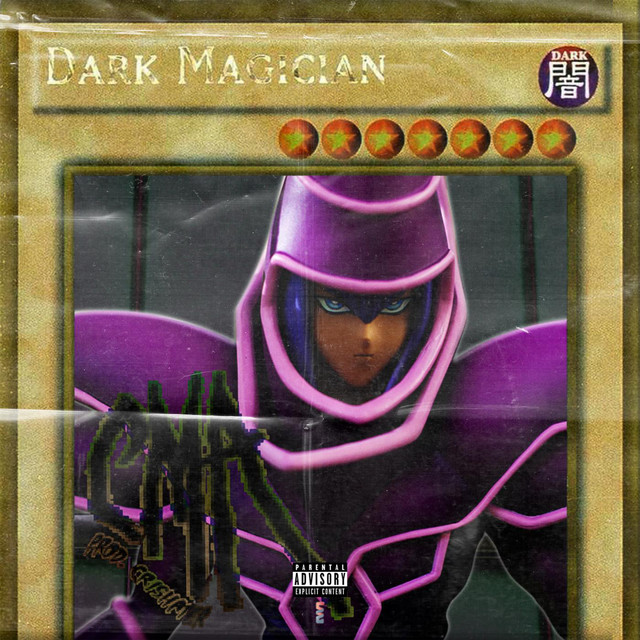 |
Marián es una aristaza sevillana con un espíritu aventurero. Su estilo distorsiona los rostros, lo que más le gusta pintar aparte de los caballos.
"Los caballos me conducen a imágenes antiguas en mi mente. No sé por qué..."
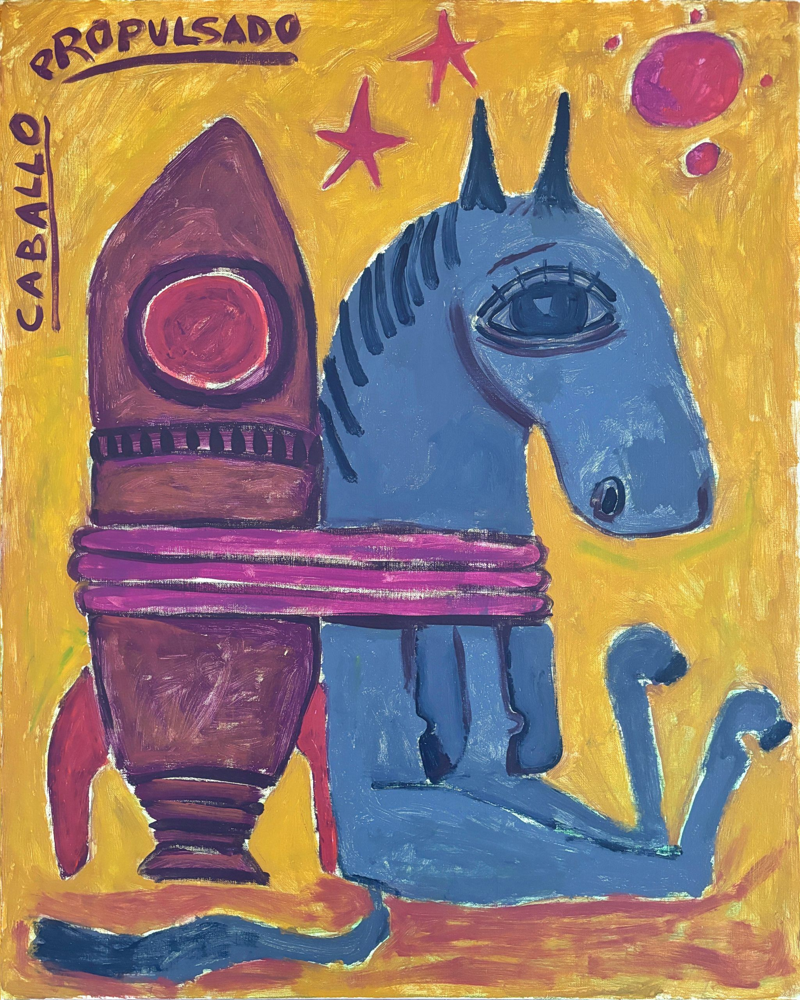 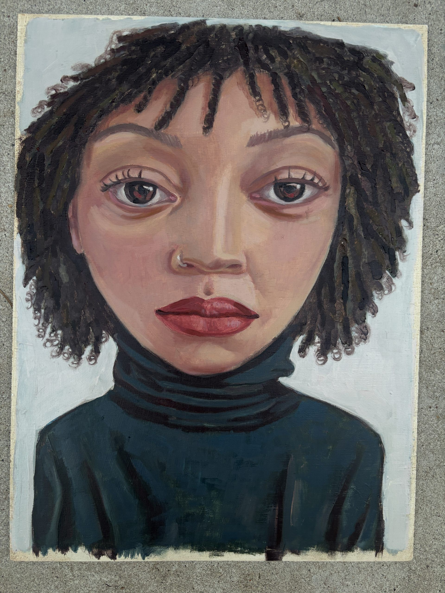 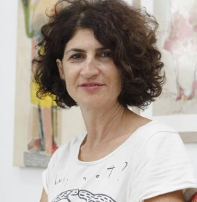 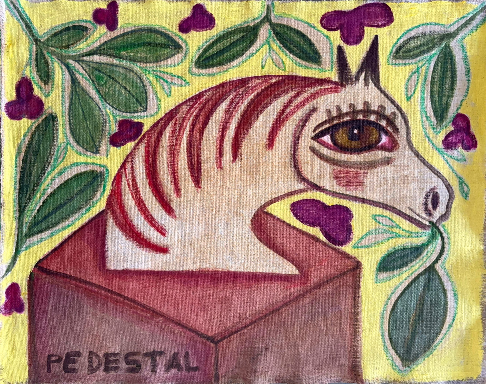